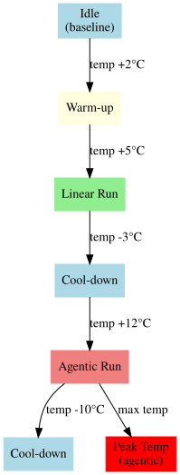

Understanding Metrics
This guide explains all the metrics collected by A-LEMS and what they mean for your research.
📊 Core Energy Metrics
Energy Measurements
| Metric |
Unit |
Description |
pkg_energy_uj |
µJ |
Total package energy (raw) |
core_energy_uj |
µJ |
Core energy (raw) |
uncore_energy_uj |
µJ |
Uncore energy (cache, memory controller, I/O) |
dram_energy_uj |
µJ |
DRAM energy (if available) |
total_energy_uj |
µJ |
Raw package energy |
dynamic_energy_uj |
µJ |
Workload energy (raw - idle) |
baseline_energy_uj |
µJ |
Idle energy for same duration |
Derived Energy Metrics
| Metric |
Formula |
Meaning |
workload_energy |
package - idle |
Energy actually used by your workload |
reasoning_energy |
core - idle_core |
Energy for actual computation |
orchestration_tax |
workload - reasoning |
Overhead of agentic orchestration |
energy_per_token |
workload / tokens |
Energy efficiency per token |
energy_per_instruction |
workload / instructions |
Energy per CPU instruction |
🎯 Orchestration Tax
The orchestration tax is A-LEMS's core metric:
tax = agentic_energy / linear_energy
tax_percent = (agentic - linear) / agentic * 100
Interpretation:
| Tax Value |
Meaning |
| 1.0x |
No overhead (rare) |
| 1.5x |
50% more energy |
| 2.0x |
2× more energy |
| 5.0x+ |
High orchestration overhead |
Example from real data:
Linear: 1.2 J
Agentic: 2.6 J
Tax: 2.2x (120% more energy)
⚡ Power Metrics
| Metric |
Unit |
Description |
avg_power_watts |
W |
Average power during run |
package_power |
W |
Instantaneous package power |
core_power |
W |
Instantaneous core power |
dram_power |
W |
DRAM power (if available) |
Power curves from energy_samples show how power changes over time:
Power (W)
25 ├─────────────────────•────
20 │ •───•
15 │ •──•
10 │ •──•
5 │ •──•
0 └────•────•────•────•────•────•
0 2 4 6 8 10 Time (s)
| Metric |
Description |
Good Value |
ipc |
Instructions Per Cycle |
> 2.0 |
cache_miss_rate |
LLC cache miss rate |
< 5% |
instructions |
Total instructions executed |
N/A |
cycles |
Total CPU cycles |
N/A |
page_faults |
Memory page faults |
Low |
IPC (Instructions Per Cycle) indicates how efficiently the CPU is used:
- < 1.0: Memory-bound or stalled
- 1.0 - 2.0: Mixed workload
- > 2.0: Compute-bound, efficient
⏱️ Timing Metrics
| Metric |
Unit |
Description |
duration_ns |
ns |
Total run duration |
planning_time_ms |
ms |
Planning phase (agentic only) |
execution_time_ms |
ms |
Tool execution phase |
synthesis_time_ms |
ms |
Response synthesis phase |
api_latency_ms |
ms |
Time waiting for API |
compute_time_ms |
ms |
Actual computation time |
waiting_time_ms |
ms |
Time between LLM calls |
Phase ratios for agentic workflows:
Planning: 2.3s (30%)
Execution: 4.1s (54%)
Synthesis: 1.2s (16%)
Total: 7.6s
🌡️ Thermal Metrics
| Metric |
Unit |
Description |
package_temp_celsius |
°C |
CPU package temperature |
start_temp_c |
°C |
Temperature at run start |
max_temp_c |
°C |
Peak temperature |
thermal_delta_c |
°C |
Temperature rise (max - start) |
thermal_gradient |
°C/s |
Rate of temperature change |
Thermal thresholds:
- < 60°C: Normal operation
- 60-80°C: Warm, still efficient
- 80-95°C: Hot, possible throttling
- > 95°C: Thermal throttling active
Thermal Profile Example

🔄 C-State Metrics
| Metric |
Description |
Power Savings |
c2_time_seconds |
Time in C2 (light sleep) |
Moderate |
c3_time_seconds |
Time in C3 (deeper sleep) |
High |
c6_time_seconds |
Time in C6 (very deep) |
Very high |
c7_time_seconds |
Time in C7 (package sleep) |
Maximum |
C-state residency shows how efficiently the CPU enters low-power states during idle periods.
📊 Scheduler Metrics
| Metric |
Description |
High Value Indicates |
context_switches_voluntary |
Thread yielding |
Normal operation |
context_switches_involuntary |
Forced preemption |
Contention |
thread_migrations |
CPU hopping |
Poor cache locality |
run_queue_length |
Runnable processes |
System load |
interrupt_rate |
Interrupts per second |
I/O activity |
🧠 Agentic Metrics
| Metric |
Description |
Typical Range |
llm_calls |
Number of LLM invocations |
1-10 |
tool_calls |
Number of tool executions |
0-5 |
steps |
Total workflow steps |
1-15 |
complexity_level |
1-3 scale |
Task difficulty |
complexity_score |
1-10 scale |
Normalized complexity |
🌍 Sustainability Metrics
| Metric |
Unit |
Description |
carbon_g |
g CO₂ |
Carbon footprint |
water_ml |
ml |
Water consumption |
methane_mg |
mg |
Methane emissions |
Country-specific factors are applied based on grid intensity:
| Country |
Carbon (g/kWh) |
Water (ml/kWh) |
| US |
0.389 |
2.1 |
| IN |
0.708 |
3.4 |
| FR |
0.055 |
1.2 |
| CN |
0.555 |
2.8 |
📈 Efficiency Metrics
| Metric |
Formula |
Good Value |
| Energy per token |
workload / tokens |
< 0.01 J/token |
| Energy per instruction |
workload / instructions |
< 1e-9 J/inst |
| Instructions per token |
instructions / tokens |
> 1000 |
| Interrupts per second |
interrupt_rate |
< 5000 |
LLM Interaction Metrics
A-LEMS captures fine-grained metrics for each LLM call, separated into phases:
Phase Timing
| Metric |
Description |
What it measures |
preprocess_ms |
Time spent preparing the request |
JSON serialization, prompt formatting |
non_local_ms |
Time spent waiting for network/remote inference |
Network latency + cloud model inference |
local_compute_ms |
Time spent in local model inference |
llama-cpp inference time |
postprocess_ms |
Time spent parsing the response |
JSON parsing, token extraction |
total_time_ms |
Total time for the LLM call |
Sum of all phases |
Network Metrics
| Metric |
Description |
bytes_sent_approx |
Approximate bytes sent (system-level) |
bytes_recv_approx |
Approximate bytes received (system-level) |
tcp_retransmits |
TCP retransmission count |
app_throughput_kbps |
Application-level throughput (bytes / non_local_ms) |
Failure Tracking
| Metric |
Description |
status |
"success" or "failed" |
error_message |
Error details if failed |
Research Metrics (View: research_metrics_view)
A-LEMS provides derived research metrics for analysis:
Orchestration Overhead Index (OOI)
| Metric |
Formula |
Interpretation |
ooi_time |
orchestration_cpu_ms / total_time_ms |
Fraction of total time spent on orchestration |
ooi_cpu |
orchestration_cpu_ms / compute_time_ms |
Fraction of local CPU spent on orchestration |
Typical Values:
- Agentic cloud: ooi_time ≈ 0.06, ooi_cpu ≈ 0.92
- Agentic local: ooi_time ≈ 0.01, ooi_cpu ≈ 1.00
- Linear: ooi_time = 0, ooi_cpu = 0
Useful Compute Ratio (UCR)
| Metric |
Formula |
Interpretation |
ucr |
total_llm_compute_ms / total_time_ms |
Fraction of time spent on actual model inference |
Typical Values:
- Agentic local: ucr ≈ 0.49
- Linear local: ucr ≈ 0.47
- Cloud: ucr = 0
Network Ratio
| Metric |
Formula |
Interpretation |
network_ratio |
total_wait_ms / total_time_ms |
Fraction of time waiting for network/remote compute |
Typical Values:
- Agentic cloud: network_ratio ≈ 0.41
- Linear cloud: network_ratio ≈ 0.33
- Local: network_ratio = 0
🔍 Sample Queries
Get All Metrics for a Run
SELECT * FROM runs WHERE run_id = 977;
Compare Linear vs Agentic
SELECT
r.workflow_type,
AVG(r.dynamic_energy_uj/1e6) as avg_energy_j,
AVG(r.duration_ns/1e9) as avg_duration_s,
AVG(r.ipc) as avg_ipc
FROM runs r
WHERE r.exp_id = 185
GROUP BY r.workflow_type;
Find High Tax Experiments
SELECT
e.exp_id,
e.task_name,
ots.tax_percent
FROM orchestration_tax_summary ots
JOIN runs r ON ots.linear_run_id = r.run_id
JOIN experiments e ON r.exp_id = e.exp_id
WHERE ots.tax_percent > 200
ORDER BY ots.tax_percent DESC;
📊 Metric Categories Summary
| Category |
Key Metrics |
Use For |
| Energy |
workload, reasoning, tax |
Core research |
| Performance |
ipc, cache_miss_rate |
CPU efficiency |
| Timing |
phase times, latency |
Bottleneck analysis |
| Thermal |
temperature, delta |
Cooling analysis |
| C-State |
residency times |
Power management |
| Scheduler |
context switches |
OS overhead |
| Agentic |
llm_calls, steps |
Workflow complexity |
| Sustainability |
carbon, water |
Environmental impact |
✅ Next Steps